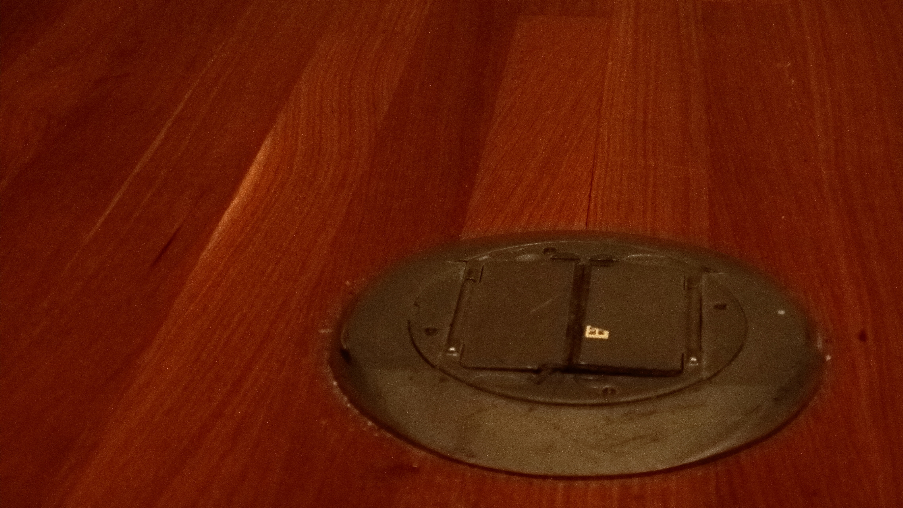
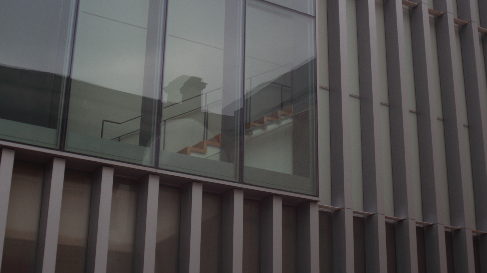

(Hint: hover over an image to see my thoughts on it)
Spotlight Pictures:
"Paper" from Second Batch

"Chlorophyllic Halo" from Second Batch

"A Museum of Art"
"Pull"

"Orb"

"Overhang"

"Grain"
"Lines"
"Stairs"

"Buds"

Clouds!
"Shades of Grey"

"Volume"

"False Cliff"
. I usualy turn up the contrast, and darken the image. That allows the differences in shading to be more pronounced as they now span the entirety of the grey spectrum.")
"water and air and stuff"
")
Second Batch
"Paper"
"Octo Friend"

"Chlorophyllic Halo"

"Doge"

"Chlorophyllic Halo"
First Batch
"Argus Lens"

"Argus Poster"

"Sapling"
.")
"Cactus"

"Spire"

"Cloud(s)"

"Lid"

"P"

"Synth"
 is that one neon line on the middle right.")